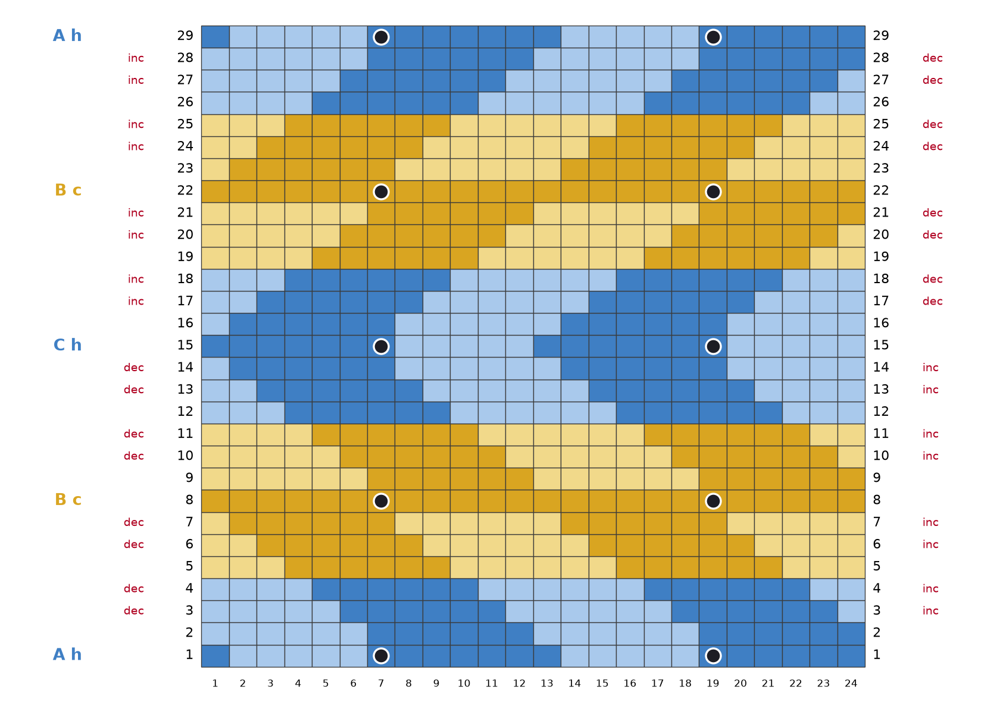
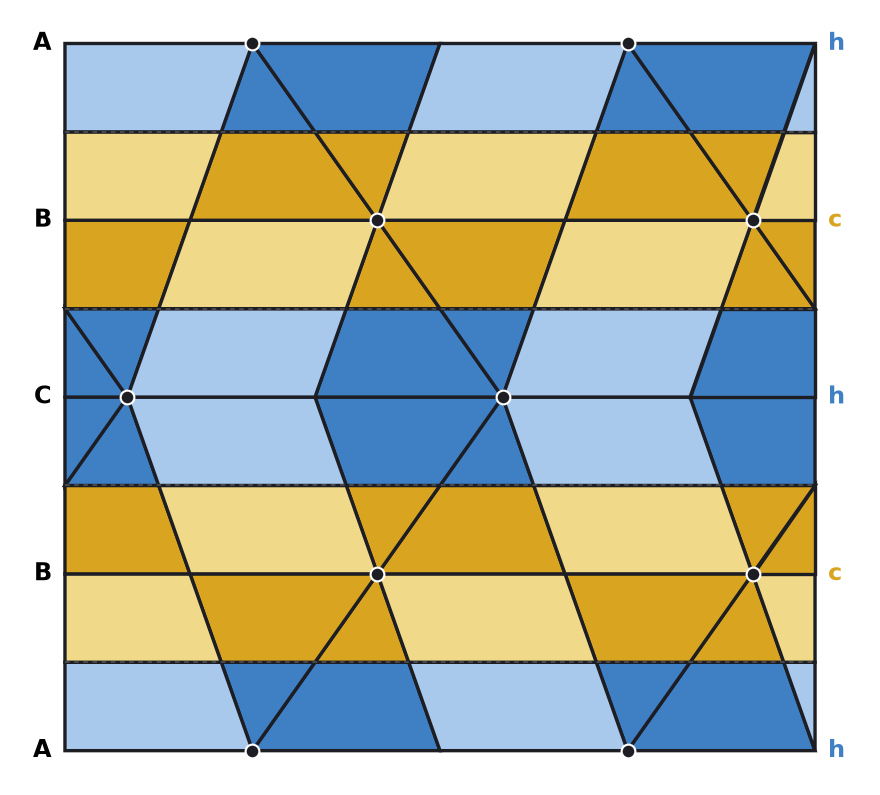

One period of the stacking A B C B A, 24 stitches by 29 rows
What the swatch tests: whether the bias rows place the fabric where the chart assumes (each band of colour sits one third of a repeat further over, to the right going up from A to C, back to the left from C to A), and how the four colours read at this size.


DG dark gold: 192 sts · LG light gold: 144 sts · DB dark blue: 186 sts · LB light blue: 174 sts
Total 696 stitches. Any yarn of one weight; four shades with clear contrast between gold and blue and between dark and light.
In the colour of the stitch: (k1, yo, k1) into the stitch, turn, p3, turn, k3, turn, p3, turn, sl1-k2tog-psso. Rows 1, 15 and 29 are RS rows. Rows 8 and 22 are WS rows: work the bobble the same way with knit and purl exchanged ((p1, yo, p1) into the stitch, turn, k3, turn, p3, turn, k3, turn, p3tog) and push it to the RS; if it sits badly, purl these two stitches plain and sew a bobble or French knot there afterwards.
DG dark gold, LG light gold, DB dark blue, LB light blue. Runs in working order (RS from stitch 24 to stitch 1, WS from stitch 1 to stitch 24); stitch numbers as on the chart.
| Row | Side | Colour runs | Bias (edge stitches) | Bobble |
|---|---|---|---|---|
| 1 | RS | 6 DB, 5 LB, 7 DB, 5 LB, 1 DB | MB at st 7, 19 | |
| 2 | WS | 6 LB, 6 DB, 6 LB, 6 DB | ||
| 3 | RS | 1 LB, 6 DB, 6 LB, 6 DB, 5 LB | bias right: k1, M1, … k2tog, k1 | |
| 4 | WS | 4 LB, 6 DB, 6 LB, 6 DB, 2 LB | bias right: p1, p2tog, … M1P, p1 | |
| 5 | RS | 3 LG, 6 DG, 6 LG, 6 DG, 3 LG | ||
| 6 | WS | 2 LG, 6 DG, 6 LG, 6 DG, 4 LG | bias right: p1, p2tog, … M1P, p1 | |
| 7 | RS | 5 LG, 6 DG, 6 LG, 6 DG, 1 LG | bias right: k1, M1, … k2tog, k1 | |
| 8 | WS | 24 DG | MB at st 7, 19 | |
| 9 | RS | 6 DG, 6 LG, 6 DG, 6 LG | ||
| 10 | WS | 5 LG, 6 DG, 6 LG, 6 DG, 1 LG | bias right: p1, p2tog, … M1P, p1 | |
| 11 | RS | 2 LG, 6 DG, 6 LG, 6 DG, 4 LG | bias right: k1, M1, … k2tog, k1 | |
| 12 | WS | 3 LB, 6 DB, 6 LB, 6 DB, 3 LB | ||
| 13 | RS | 4 LB, 6 DB, 6 LB, 6 DB, 2 LB | bias right: k1, M1, … k2tog, k1 | |
| 14 | WS | 1 LB, 6 DB, 6 LB, 6 DB, 5 LB | bias right: p1, p2tog, … M1P, p1 | |
| 15 | RS | 5 LB, 7 DB, 5 LB, 7 DB | MB at st 7, 19 | |
| 16 | WS | 1 LB, 6 DB, 6 LB, 6 DB, 5 LB | ||
| 17 | RS | 4 LB, 6 DB, 6 LB, 6 DB, 2 LB | bias left: k1, ssk, … M1, k1 | |
| 18 | WS | 3 LB, 6 DB, 6 LB, 6 DB, 3 LB | bias left: p1, M1P, … ssp, p1 | |
| 19 | RS | 2 LG, 6 DG, 6 LG, 6 DG, 4 LG | ||
| 20 | WS | 5 LG, 6 DG, 6 LG, 6 DG, 1 LG | bias left: p1, M1P, … ssp, p1 | |
| 21 | RS | 6 DG, 6 LG, 6 DG, 6 LG | bias left: k1, ssk, … M1, k1 | |
| 22 | WS | 24 DG | MB at st 7, 19 | |
| 23 | RS | 5 LG, 6 DG, 6 LG, 6 DG, 1 LG | ||
| 24 | WS | 2 LG, 6 DG, 6 LG, 6 DG, 4 LG | bias left: p1, M1P, … ssp, p1 | |
| 25 | RS | 3 LG, 6 DG, 6 LG, 6 DG, 3 LG | bias left: k1, ssk, … M1, k1 | |
| 26 | WS | 4 LB, 6 DB, 6 LB, 6 DB, 2 LB | ||
| 27 | RS | 1 LB, 6 DB, 6 LB, 6 DB, 5 LB | bias left: k1, ssk, … M1, k1 | |
| 28 | WS | 6 LB, 6 DB, 6 LB, 6 DB | bias left: p1, M1P, … ssp, p1 | |
| 29 | RS | 6 DB, 5 LB, 7 DB, 5 LB, 1 DB | MB at st 7, 19 |
Gauge of the design: 12 stitches per repeat, 7 rows per layer of balls, stitches about 5 wide to 4 tall (e.g. 22 stitches and 28 rows to 10 cm). Note your own gauge on the swatch; the true proportions need stitch width : row height ≈ 1.24.